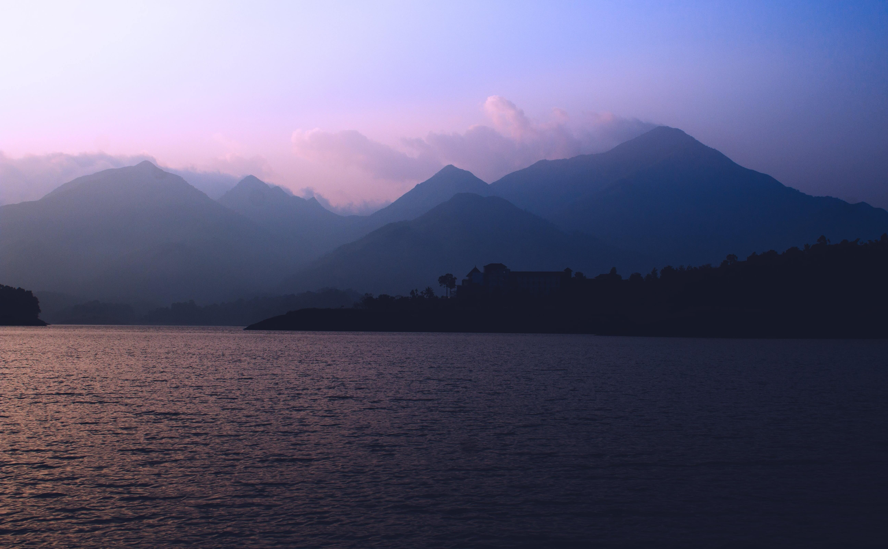
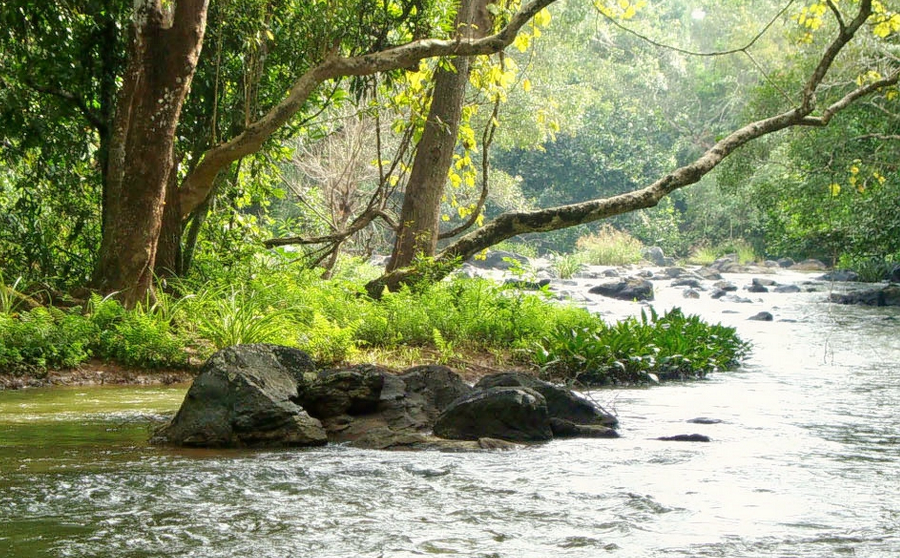

Banasura Sagar Dam

Chembra

Wayanad, the green paradise is nestled among the mountains of the Western Ghats, forming the border world of the greener part of Kerala. Clean and pristine, enchanting and hypnotizing, this land is filled with history and culture. Located at a distance of 76 km. from wayanadthe sea shores of Kozhikode, this verdant hill station is full of plantations, forests and wildlife. Wayanad hills are contiguous to Mudumalai in Tamil Nadu and Bandhipur in Karnataka, thus forming a vast land mass for the wild life to move about in their most natural abode. Regarding geographical location, Wayanad district stands on the southern top of the Deccan plateau and its chief glory is the majestic Western Ghats with lofty ridges and rugged terrain interspersed with dense forest, tangled jungles and deep valleys. The place also enjoys a strategic location as the leading tourist centres of South India like Ooty, Mysore, Bangalore, Coorg and Kannur are situated around this region.